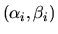
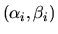
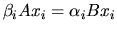
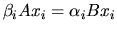
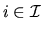
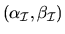
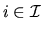
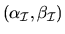
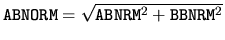
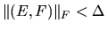

Bounds for individual eigenvalues and eigenvectors are provided by the driver xGGEVX (subsection 2.3.5.2) or the computational routine xTGSNA (subsection 2.4.8). Bounds for cluster of eigenvalues and their associated pair of deflating subspaces are provided by the driver xGGESX (subsection 2.3.5.2) or the computational routine xTGSEN (subsection 2.4.8).
We let
 be the ith computed
eigenvalue pair and

the ith exact eigenvalue
pair.4.2Let
be the ith computed
eigenvalue pair and

the ith exact eigenvalue
pair.4.2Let  and
be the corresponding computed right
and left eigenvectors, and xi and yi the exact right and left
eigenvectors (so that

and
).
As in the standard nonsymmetric eigenvalue problem, we also want to
bound the error in the average of a cluster of eigenvalues, corresponding
to a subset
and
be the corresponding computed right
and left eigenvectors, and xi and yi the exact right and left
eigenvectors (so that

and
).
As in the standard nonsymmetric eigenvalue problem, we also want to
bound the error in the average of a cluster of eigenvalues, corresponding
to a subset  of the integers from 1 to n.
However, since there are both finite and infinite eigenvalues,
we need a proper definition for the average of the eigenvalues
of the integers from 1 to n.
However, since there are both finite and infinite eigenvalues,
we need a proper definition for the average of the eigenvalues
 for
.
Here we let

denote the average of the selected eigenvalues4.3:
,
and similarly for
.
We also let
and
denote the
exact pair of left
and right deflating subspaces associated with the cluster of selected
eigenvalues.
Similarly,
and
are the
corresponding computed pair of left and right deflating subspaces.
for
.
Here we let

denote the average of the selected eigenvalues4.3:
,
and similarly for
.
We also let
and
denote the
exact pair of left
and right deflating subspaces associated with the cluster of selected
eigenvalues.
Similarly,
and
are the
corresponding computed pair of left and right deflating subspaces.
The algorithms for the generalized nonsymmetric eigenproblem are normwise backward stable; the computed eigenvalues, eigenvectors and deflating subspaces are the exact ones of slightly perturbed matrices A + E and B +F, where . The code fragment in the previous subsection approximates by , where , and the values ABNRM and BBNRM returned by xGGEVX are the 1-norm of the matrices A and B, respectively.
xGGEVX (or xTGSNA) returns reciprocal condition numbers
for each eigenvalue pair
 and corresponding
left and right eigenvectors
and
and corresponding
left and right eigenvectors
and  :
si and
:
si and
 .
si is a reciprocal condition
number for the computed eigenpair
.
si is a reciprocal condition
number for the computed eigenpair
 ,
and is referred to as RCONDE(i) by xGGEVX.
,
and is referred to as RCONDE(i) by xGGEVX.
 is a reciprocal condition number for the left and right
eigenvectors
and
is a reciprocal condition number for the left and right
eigenvectors
and  ,
and is referred to as
RCONDV(i) by xGGEVX (see subsection 4.11.1.3 for definitions).
Similarly, xGGESX (or xTGSEN) returns condition numbers for
eigenvalue clusters and deflating subspaces corresponding to
a subset
,
and is referred to as
RCONDV(i) by xGGEVX (see subsection 4.11.1.3 for definitions).
Similarly, xGGESX (or xTGSEN) returns condition numbers for
eigenvalue clusters and deflating subspaces corresponding to
a subset  of the eigenvalues.
These are
of the eigenvalues.
These are  and
and  ,
the reciprocal values of
the left and right projection norms p and q, and
estimates of the separation between two matrix pairs
defined by
,
the reciprocal values of
the left and right projection norms p and q, and
estimates of the separation between two matrix pairs
defined by
 and
(see subsection 4.11.1.3 for definitions).
xGGESX reports
and
(see subsection 4.11.1.3 for definitions).
xGGESX reports  and
and  in RCONDE(1)
and RCONDE(2) (PL and PR in xTGSEN)), respectively,
and estimates of
in RCONDE(1)
and RCONDE(2) (PL and PR in xTGSEN)), respectively,
and estimates of
 and
in RCONDV(1)
and RCONDV(2) (DIF(1) and DIF(2) in xTGSEN), respectively.
and
in RCONDV(1)
and RCONDV(2) (DIF(1) and DIF(2) in xTGSEN), respectively.
As for the nonsymmetric eigenvalue problem we provide both asymptotic and global error bounds. The asymptotic approximate error bounds for eigenvalues, averages of eigenvalues, eigenvectors, and deflating subspaces provided in Table 4.7 are true only for sufficiently small .
If the problem is ill-conditioned, the asymptotic bounds may only hold for extremely small values of . Therefore, we also provide similar global error bounds, which are valid for all perturbations that satisfy an upper bound on . The global error bounds in Table 4.8 are guaranteed to hold for all , where
We let
in Table 4.8.
If  is small, then the computed pair of left and right deflating
subspaces (or computed left and right eigenvectors) are small perturbations of
the exact pair of deflating subspaces (or the true left and right eigenvectors).
The error bounds conform with the corresponding bounds for the nonsymmetric
eigenproblem (see subsection 4.8.1.1 ).
is small, then the computed pair of left and right deflating
subspaces (or computed left and right eigenvectors) are small perturbations of
the exact pair of deflating subspaces (or the true left and right eigenvectors).
The error bounds conform with the corresponding bounds for the nonsymmetric
eigenproblem (see subsection 4.8.1.1 ).
For ill-conditioned problems the restriction  on
may also be small.
Indeed, a small value of
on
may also be small.
Indeed, a small value of  shows that the cluster of
eigenvalues (in the (1,1)-blocks of (A, B)) is ill-conditioned in
the sense that small perturbations of (A, B) may imply that one eigenvalue in
the cluster moves and coalesces with another eigenvalue (outside the cluster).
Accordingly, this also means that the associated (left and right)
deflating subspaces are sensitive to small perturbations,
since the size of the
perturbed subspaces may change for small perturbations of (A, B).
See also the discussion of singular problems in section 4.11.1.4.
shows that the cluster of
eigenvalues (in the (1,1)-blocks of (A, B)) is ill-conditioned in
the sense that small perturbations of (A, B) may imply that one eigenvalue in
the cluster moves and coalesces with another eigenvalue (outside the cluster).
Accordingly, this also means that the associated (left and right)
deflating subspaces are sensitive to small perturbations,
since the size of the
perturbed subspaces may change for small perturbations of (A, B).
See also the discussion of singular problems in section 4.11.1.4.
As for the nonsymmetric eigenvalue problem we have global error bounds for
eigenvalues which are true for all E and F.
Let (A, B) be a diagonalizable matrix pair. We let the columns of
and
be the computed left and right
eigenvectors associated with
the computed generalized eigenvalue pairs
.
Moreover, we assume that
and
are normalized such that
and
,
i.e., we
overwrite
with
,
 with
and
with
and  with
.
Then all eigenvalues
of (A, B) with
lie in the union of n regions
(``spheres'')
with
.
Then all eigenvalues
of (A, B) with
lie in the union of n regions
(``spheres'')
Notation Conversion For easy of reference, the following table summarizes the notation used in mathematical expression of the error bounds in tables 4.7 and 4.8 and in the corresponding driver and computational routines.
| Mathematical | Driver Routines | Computational Routines | ||
| notation | name | parameter | name | parameter |
| si | xGGEVX | RCONDE(i) | xTGSNA | S(i) |
| xGGEVX | RCONDV(i) | xTGSNA | DIF(i) | |
| xGGESX | RCONDE(1) | xTGSEN | PL | |
| xGGESX | RCONDE(2) | xTGSEN | PR | |
| xGGESX | RCONDV(1) | xTGSEN | DIF(1) | |
| xGGESX | RCONDV(2) | xTGSEN | DIF(2) | |
The quantities li, ri,
and
used in
Table 4.8 (for the global error bounds of
the
computed eigenvalue pair
and the left and right eigenvectors
and  )
can be obtained by calling xTGSEN with
.
)
can be obtained by calling xTGSEN with
.